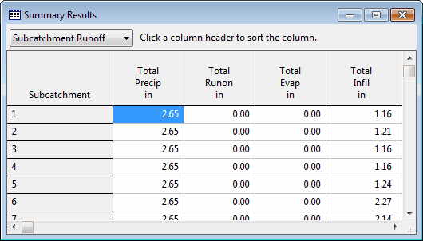

SWMM's Summary Results report lists summary results for each subcatchment, node, and link in the project through a selectable list of tables. To view the various summary results tables, select Report >> Summary from the Main Menu or click the  button on the Main Toolbar and select Summary Results from the drop-down menu that appears. The Summary Results window looks as follows:
button on the Main Toolbar and select Summary Results from the drop-down menu that appears. The Summary Results window looks as follows:

The drop-down box at the upper left allows you to choose the type of results to view. The choices are:
 The summary results displayed in these tables are based on results found at every computational time step and not just on the results from each reporting time step.
The summary results displayed in these tables are based on results found at every computational time step and not just on the results from each reporting time step.
Only summary categories relevant to the particular project and its results will be listed (e.g., Node Flooding and Pumping Summary will not appear if the run has no flooded nodes and the project has no pumps, respectively).
Clicking on the name of an object in the first column of the table will locate that object both in the Project Browser and on the Study Area Map. Clicking on a column heading will sort the entries in the table by the values in that column (alternating between ascending and descending order with each click.
Selecting Edit >> Copy To from the Main Menu or clicking  on the Main Toolbar will allow you to copy the contents of the table to either the Windows Clipboard or to a file. To save both the entire Status Report and all tables of the Summary Report to a file, select File >> Export >> Status/Summary Report from the Main Menu.
on the Main Toolbar will allow you to copy the contents of the table to either the Windows Clipboard or to a file. To save both the entire Status Report and all tables of the Summary Report to a file, select File >> Export >> Status/Summary Report from the Main Menu.